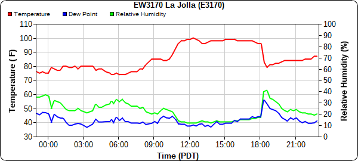
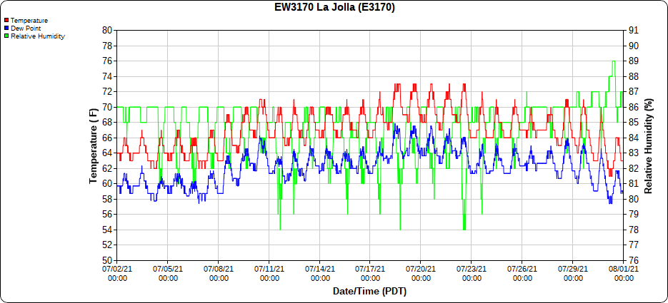
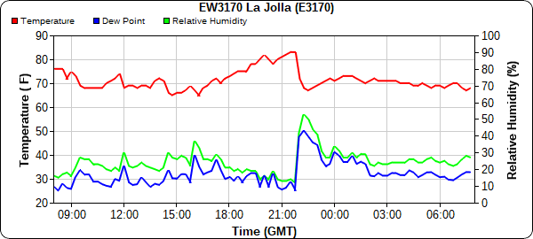
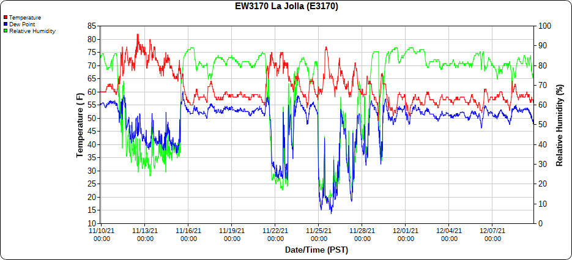

Jesse Robinett Climate of La Jolla California Low Clouds Case Studies The Follies of 90 Day Forecasting More Resources
We've already examined the average temperatures of La Jolla in depth, so now it's time to have some fun and look at some interesting weather in greater detail.
All plots taken from MesoWest.
First up is the hottest day the station has ever recorded, with an absolutely hellish high of 100ºF and a prolonged stretch of temperatures in the upper 90s. I cannot fathom what it was like in the dorms with their lack of air conditioning and notoriously horrible circulation. I rue the day such warm temperatures visit La Jolla once more, especially because the record temperatures at stations with longer periods of record are in the low 110's.

One can actually see the ocean air making a feeble attempt to end the sweltering around 6pm, with a crash in temperature and a rise in dewpoint. However, the sea breeze was too weak, and so the temperature continued to rise after the sun had gone down. You will soon see that that is a recurrent theme with heatwaves here.
This stretch of weather is remarkable solely because it is almost unbelievably boring.

It's just the same thing for a week, then the same thing but 4ºF warmer, then the same thing another 4ºF warmer. If I had to describe what La Jolla's climate feels like, this is the image I would use. Even in wintertime it's more of the same, just a few degrees colder, with occasional rain, and the occasional random Santa Ana heat wave to remind you that you're never safe from the heat.
Already mentioned in the Climate of La Jolla section, the warmest day of 2021 was January 15th. The day looks to have been a classic Santa Ana, with offshore winds suppressing the ocean's attempts to moderate the temperature.

Just as with the previous heatwave, one can also see the sea breeze make a decent attempt to cool down La Jolla, and it was much more succesful in this case, with only a slight rebound in temperature after its arrival
In this next plot we see a typical snapshot of fall in La Jolla, with periods of extremely repetitive and marginally chilly weather punctuated intensely by warm and dry Santa Ana winds.

One interesting quirk of the Santa Ana winds is how the temperature often struggles to fall at night. It makes for a subpar sleeping experience when at 12am the temperature outside is still 77ºF. This warm night effect is caused by disruption of the cold layer of air on the ground by mixing due to the winds. Additionally, as covered in the low clouds section, as air rises it cools; the opposite occurs as it descends and is squeezed by higher pressure. As Santa Ana winds are forced to descend on the backside of our local peninsular ranges, they warm appreciably, making nights uncomfortably hot.